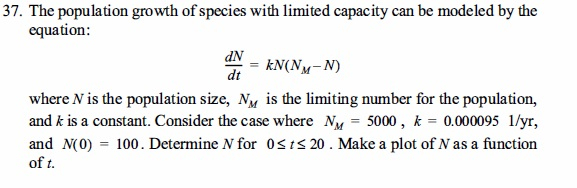
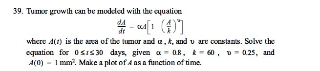
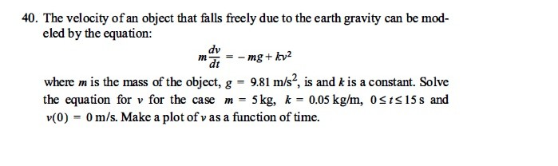

Ejercicio 37 – Crecimiento poblacional
Modelo logístico con capacidad limitada.

Valores de Ejemplo: Población inicial = 100, Tiempo final = 20 años, Paso = 0.1 años.
Conclusión
Ejercicio 39 – Crecimiento de un tumor
Modelo con saturación.

Valores de Ejemplo: Tasa α = 0.8, Capacidad k = 60 mm², Exponente ν = 0.25, Área inicial A₀ = 1 mm², Tiempo = 30 días. (Paso h fijado a 0.1)
Conclusión
Ejercicio 40 – Velocidad de caída
Caída libre con resistencia cuadrática.

Valores de Ejemplo: Velocidad inicial = 0 m/s, Tiempo final = 100 s, Paso = 0.25 s.
Conclusión
Comparación Teórica: Método de Heun vs RK4
| Criterio | Método de Heun | Método RK4 |
|---|---|---|
| Orden de precisión | 2 (más preciso que Euler) | 4 (alta precisión) |
| Evaluaciones de f(t, y) por paso | 2 | 4 |
| Costo computacional | Bajo a medio | Alto (por más evaluaciones) |
| Uso típico | Problemas donde se requiere mejora sobre Euler sin mucho costo | Cuando se busca alta precisión con pasos grandes |
| Ventajas | Sencillo, más preciso que Euler, rápido | Muy preciso, estable y robusto |
| Desventajas | Menos preciso que RK4 | Mayor carga computacional |